Tap outside the photo, or the ✕, to go back
Every edition, kept as published — Morning, Midday, and Evening, plus out-of-cycle safety banners. Reader counts (the 👁 line on each entry) are tallied from Nov 6, 2026 — editions published before the counter starts at zero. Each entry also links its vote results — the 👍/👎 tallies for that edition.
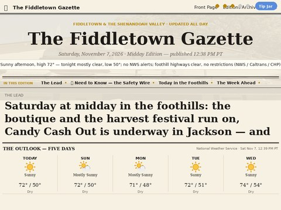
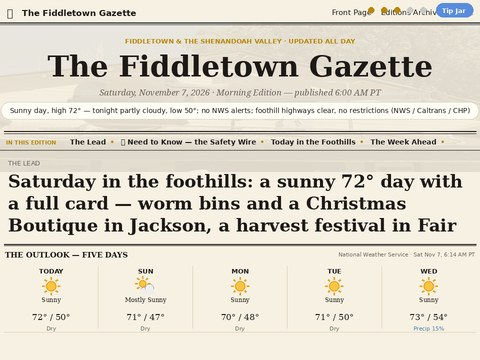
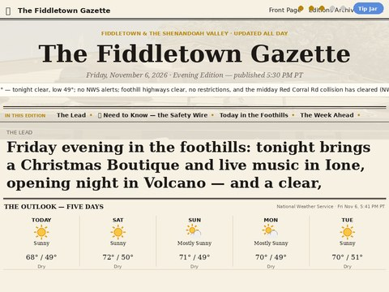
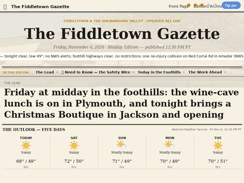
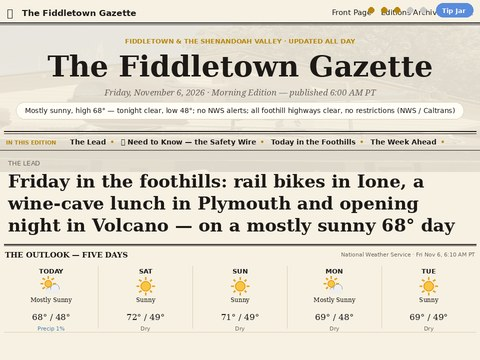
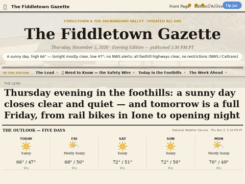
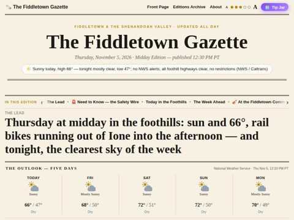
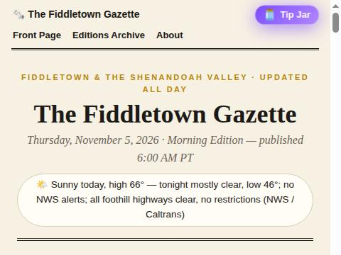
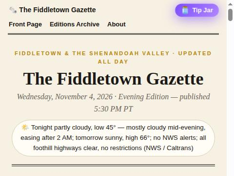
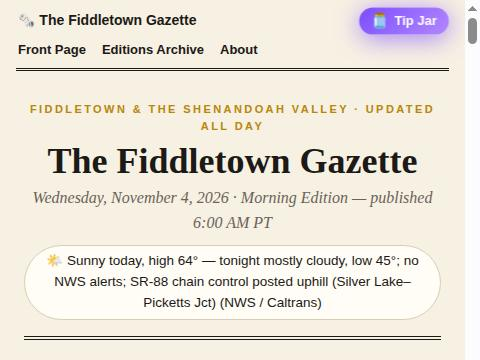
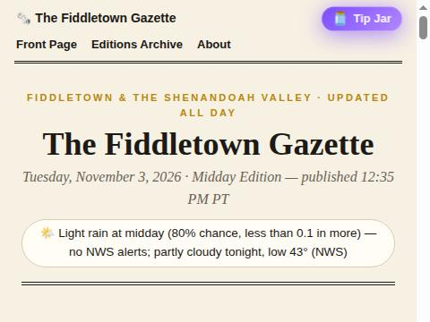
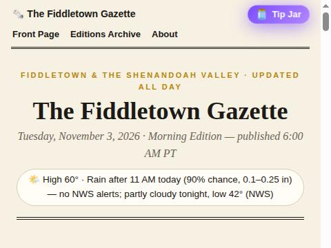
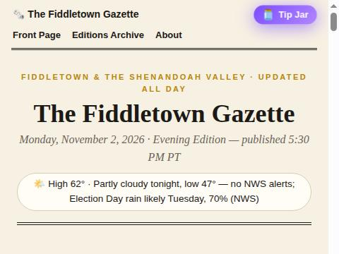
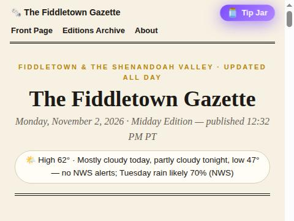
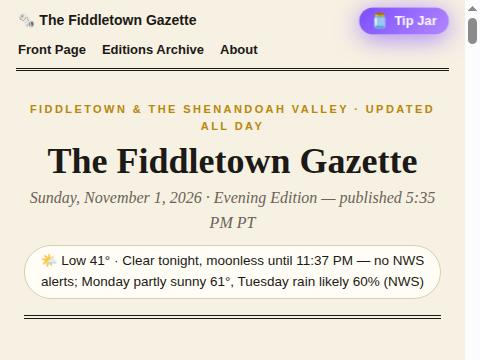
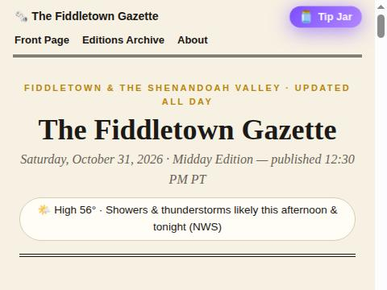
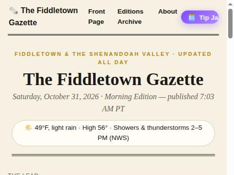